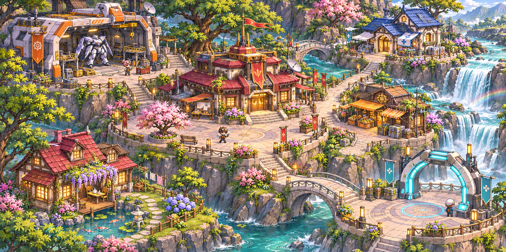
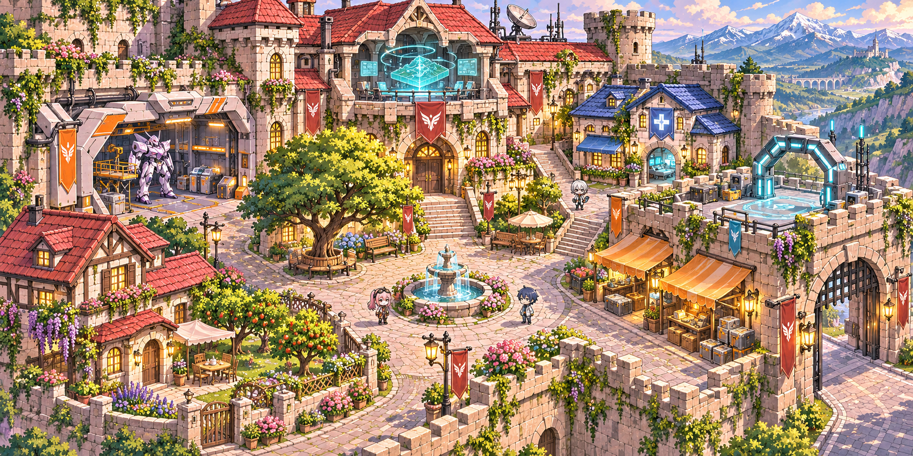
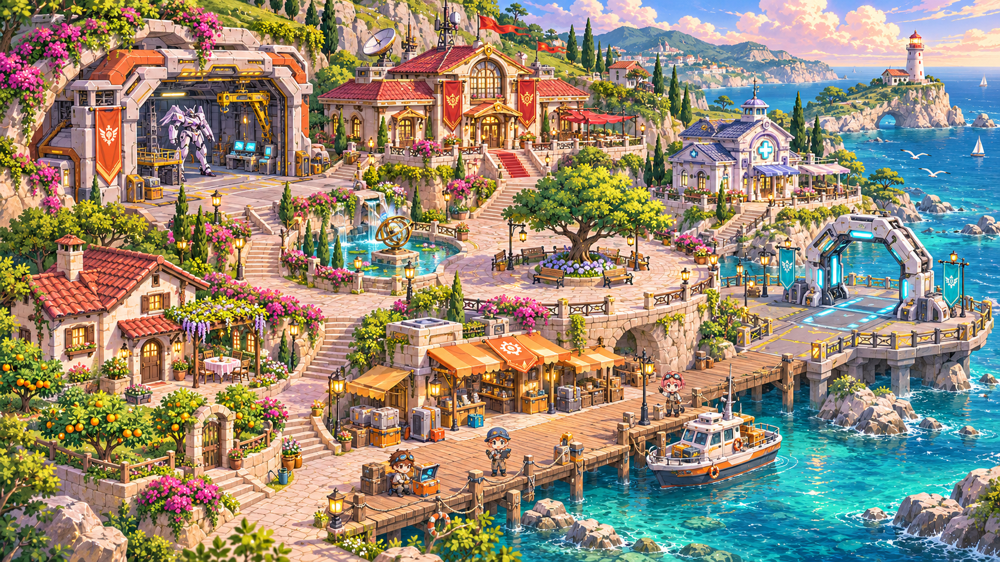
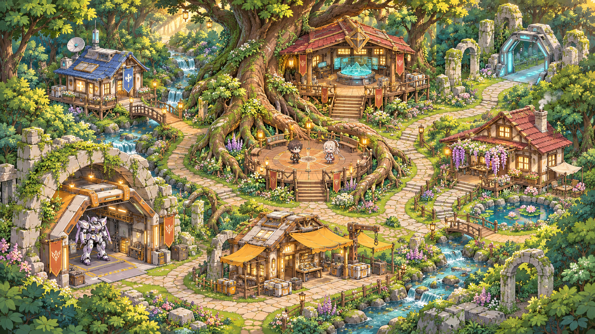
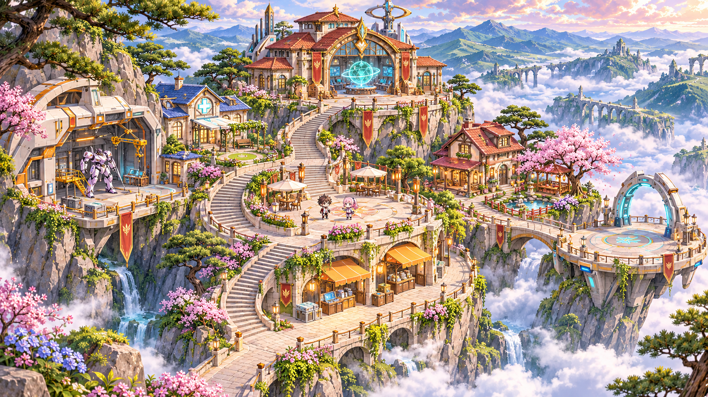

01 / Waterfall Terraces

Lush highland village across rocky terraces; right-side river and waterfalls, central command plaza, connecting bridges and gardens.
Five scenery concepts. Click an image to open the full-resolution file.

Lush highland village across rocky terraces; right-side river and waterfalls, central command plaza, connecting bridges and gardens.

Compact reclaimed stone fortress; command keep at rear, facilities integrated into enclosing walls, central fountain and shade tree.

Terraced coastal settlement, winding hillside lanes, turquoise sea, dockside supply market, crew citrus garden and deployment pier.

Hidden woodland refuge around a giant ancient tree, horseshoe arrangement, root meeting deck, mossy ruins, streams and winding paths.

Mountain-ridge settlement above clouds, S-shaped terraced spine, cliffside hangar, high command terrace, gardens and deployment lookout.